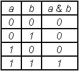
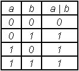
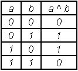
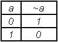

OPERADORES A NIVEL DE BIT
AND ( & )

char a,b,c;a=0xaa;
b=0x55;c=a&b;OR ( | )

char a,b,c;a=0xaa;b=0x55;
c=a|b;>XOR ( ^ )

char a,b,c;a=0xaa;b=0x55;c=a^b;NOT ( ~ )

char a,b;a=0xaa;b=~a;Desplazamiento izquierdo ( << )
- Produce el desplazamiento de los bits de la variable hacía la izquierda en la cantidad expresada
- Inserta ceros en los bits menos significativos
- Su sintaxis es variable1 = variable2 << cantidad_desplazada;
char a,b;a=0xaa;b=a<<3;Desplazamiento derecho ( >> )
- Produce el desplazamiento de los bits de la variable hacia la derecha en la cantidad expresada
- Inserta ceros en los bits mas significativos
- Su sintaxis es variable1 = variable2 >> cantidad_desplazada;
char a,b;a=0xaa;b=a>>3;ENUMERACIONES
Declaración
enum etiqueta { constante_1,
constante_2,
constante_3,
. . .
. . .
constante _n} lista_de_variables;
enum etiqueta { constante_1,
constante_2,
constante_3,
. . .
. . .
constante _n};
Ejemplos:
enum color {
blanco,
negro,
verde,
azul,
rojo};
enum dias {
lunes=2,
martes,
miercoles,
jueves,
viernes};
enum cargos {
titular,
asociado,
adjunto,
jtp=10,
atp1,
atp2};
enum mes {
ene=10,
feb,
mar,
abr=20,
may,
jun,
jul=30,
ago,
sep,
oct=40,
nov,
dic};